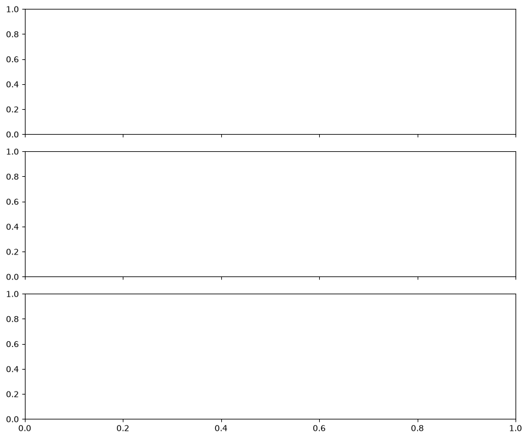

An Exception was encountered at ‘In [14]’.
Daily weather observations from KNMI: Open Data API vs EDR API¶
This notebook shows how to get data from the KNMI Data Platform with the knmidata Python package, using the dataset daily-in-situ-meteorological-observations (daily observations from the Dutch automatic weather stations).
We fetch the same dataset through both APIs and compare:
Open Data API — download whole files (NetCDF) and open them as one
xarray.Dataset.EDR API — run spatio-temporal queries (location / area), parse the response into an
xarray.Dataset, and plot the time series of precipitation (RH), temperature (TG) and evaporation (EV24) at De Bilt.
How KNMI data is organized¶
The KNMI Data Platform (
dataplatform.knmi.nl) is the data catalog. Everything in it is a dataset with a unique name and version (e.g.daily-in-situ-meteorological-observations, version1.0). The version matters: the API paths contain both.Datasets come in two flavours:
in-situ observations: point measurements at automatic weather stations (AWS), e.g. temperature, wind, precipitation per station;
gridded products: radar composites, HARMONIE model output, satellite imagery — regularly spaced grids.
Each dataset is exposed through one or two APIs (see the “Access” tab on the dataset page):
the Open Data API (
/open-data/v1): file-based — you list files and download them (via temporary presigned S3 URLs);the EDR API (
/edr/v1): an OGC standard for spatio-temporal queries — you ask for a point, area, or cube and get back a structured payload (CoverageJSON), no files involved.
Times are UTC everywhere. KNMI file names embed the observation time (e.g.
..._20260601.nc= 2026-06-01).This dataset holds daily values per station. The variable codes are the classic KNMI “etmaalwaarden” codes: TG = daily mean temperature (°C), RH = daily precipitation sum (mm), EV24 = Makkink reference evaporation (mm), plus TN/TX (min/max temperature), FG (mean wind), etc.
The two APIs at a glance¶
Open Data API |
EDR API |
|
|---|---|---|
Base URL |
|
|
Model |
list files in a dataset, get a presigned download URL per file |
query a collection by location/time/parameters |
Typical use |
bulk download of whole files / long history |
targeted extracts: one station, one period, a few parameters |
You get |
NetCDF/HDF5 files on disk → |
CoverageJSON/GeoJSON → parsed to |
Granularity |
whole files (all stations/variables in the file) |
exactly the queried subset |
Auth |
anonymous key possible (shared, rate-limited) |
registered key required (dedicated quota) |
Rule of thumb: use EDR when you know what you want (a station, a bbox, a time range, a few variables); use Open Data when you want everything (whole files, full archives, model/radar grids).
Authentication¶
Every request needs an API key in the Authorization header (raw key, no Bearer prefix). Request a free registered key at developer.dataplatform.knmi.nl.
knmidata resolves keys in this order — explicit argument first, then environment variables:
API |
Argument |
Environment variables |
|---|---|---|
Open Data |
|
|
EDR |
|
|
Note: Open Data and EDR keys are not interchangeable, and the EDR API has no anonymous key. The anonymous Open Data key is published on the docs page and scraped automatically by knmidata, but it shares one rate limit across all anonymous users.
Setup: create a client¶
KNMIClient is the synchronous client (runs everything on a background event loop, so it also works inside Jupyter). For async code use AsyncKNMIClient instead. Without keys, Open Data falls back to the anonymous key; the EDR part below checks whether a key is available and skips gracefully otherwise.
[2]:
import os
# Load keys from the gitignored .env file (see the README Authentication section).
# The key itself never appears in this notebook. On GitHub Actions, skip the
# .env file: store the key as a repository *secret* and expose it to the
# workflow as an env var (see .github/workflows/documentation.yml) — GitHub
# masks secret values in logs.
try:
from dotenv import load_dotenv
load_dotenv(".env")
except ImportError:
pass # alternative: export KNMI_OPENDATA_API_KEY / KNMI_EDR_API_KEY in your shell
# Presence check only — never print the key itself.
print("KNMI_OPENDATA_API_KEY set:", bool(os.environ.get("KNMI_OPENDATA_API_KEY")))
print("KNMI_EDR_API_KEY set:", bool(os.environ.get("KNMI_EDR_API_KEY")))
try:
client = knmidata.KNMIClient(
api_key=os.environ.get("KNMI_OPENDATA_API_KEY") or None,
edr_key=os.environ.get("KNMI_EDR_API_KEY") or None,
) # keys are resolved from the environment
client_ok = True
except knmidata.KNMIAuthError as exc:
client = None
client_ok = False
print(f"Could not create a client (no usable key?): {exc}")
KNMI_OPENDATA_API_KEY set: False
KNMI_EDR_API_KEY set: False
1. Open Data API — list and download whole files¶
The Open Data API is file-based:
GET /datasets/{name}/versions/{version}/fileslists the files, with cursor pagination (maxKeysup to 1000 +nextPageToken).Time filtering uses
begin/end, but note: they are compared against theorderByattribute.knmidatatherefore sendsorderBy=lastModifiedautomatically when you passstart_time/end_time(with the defaultorderBy=filename,begin/endwould be compared as filename strings instead of timestamps).GET .../files/{filename}/urlreturns a short-lived presigned S3 URL.The file is streamed to disk (atomic
.part→ rename, size-checked), andget_datasetassembles the files into onexarray.Dataset(combine_by_coordsover the time dimension).
[3]:
files = client.opendata.list_files(
DATASET_NAME,
DATASET_VERSION,
start_time=START,
end_time=END,
)
print(f"{len(files)} files between {START} and {END}: {files}")
---------------------------------------------------------------------------
KNMIHTTPError Traceback (most recent call last)
Cell In[3], line 1
----> 1 files = client.opendata.list_files(
2 DATASET_NAME,
3 DATASET_VERSION,
4 start_time=START,
File ~/work/KNMI_Data_Platform/KNMI_Data_Platform/.tox/notebooks/lib/python3.13/site-packages/knmidata/client.py:209, in _SyncFacade._wrap.<locals>.wrapper(*args, **kwargs)
207 @functools.wraps(func)
208 def wrapper(*args: Any, **kwargs: Any) -> Any:
--> 209 return self._run(func(*args, **kwargs))
File ~/work/KNMI_Data_Platform/KNMI_Data_Platform/.tox/notebooks/lib/python3.13/site-packages/knmidata/client.py:299, in KNMIClient._run(self, coro)
297 coro.close()
298 raise KNMIError("KNMIClient is closed; create a new client.")
--> 299 return asyncio.run_coroutine_threadsafe(coro, self._loop).result()
File ~/work/_temp/uv-python-dir/cpython-3.13.18-linux-x86_64-gnu/lib/python3.13/concurrent/futures/_base.py:460, in Future.result(self, timeout)
458 raise CancelledError()
459 elif self._state == FINISHED:
--> 460 return self.__get_result()
461 else:
462 raise TimeoutError()
File ~/work/_temp/uv-python-dir/cpython-3.13.18-linux-x86_64-gnu/lib/python3.13/concurrent/futures/_base.py:402, in Future.__get_result(self)
400 if self._exception is not None:
401 try:
--> 402 raise self._exception
403 finally:
404 # Break a reference cycle with the exception in self._exception
405 self = None
File ~/work/KNMI_Data_Platform/KNMI_Data_Platform/.tox/notebooks/lib/python3.13/site-packages/knmidata/opendata/client.py:146, in AsyncOpenDataClient.list_files(self, dataset_name, dataset_version, start_time, end_time, max_keys, sorting, order_by, file_pattern, max_files)
143 if end:
144 params["end"] = end
--> 146 payload = await self.transport.get_json(
147 endpoint, auth=self.auth, params=params
148 )
149 logger.debug(
150 "Catalog page: %d files (isTruncated=%s, nextPageToken=%s)",
151 len(payload.get("files", [])),
152 payload.get("isTruncated"),
153 bool(payload.get("nextPageToken")),
154 )
156 for item in payload.get("files", []):
File ~/work/KNMI_Data_Platform/KNMI_Data_Platform/.tox/notebooks/lib/python3.13/site-packages/knmidata/_http.py:226, in AsyncTransport.get_json(self, url, auth, params)
203 async def get_json(
204 self,
205 url: str,
(...) 208 params: dict[str, Any] | None = None,
209 ) -> Any:
210 """GET a URL and return the parsed JSON body.
211
212 Parameters
(...) 224 Parsed JSON payload.
225 """
--> 226 response = await self.request("GET", url, auth=auth, params=params or {})
227 return response.json()
File ~/work/KNMI_Data_Platform/KNMI_Data_Platform/.tox/notebooks/lib/python3.13/site-packages/knmidata/_http.py:187, in AsyncTransport.request(self, method, url, auth, **kwargs)
179 if response.status_code >= 400:
180 logger.error(
181 "HTTP %s %s -> %d: %s",
182 method,
(...) 185 self._response_text(response)[:200],
186 )
--> 187 self._raise_for_status(response)
188 return response
189 logger.warning(
190 "Retryable HTTP %d on %s %s (attempt %d/%d) — retrying",
191 response.status_code,
(...) 195 self.max_retries + 1,
196 )
File ~/work/KNMI_Data_Platform/KNMI_Data_Platform/.tox/notebooks/lib/python3.13/site-packages/knmidata/_http.py:96, in AsyncTransport._raise_for_status(cls, response)
88 if response.status_code in (401, 403):
89 raise KNMIAuthError(
90 f"KNMI API rejected the API key for {url} "
91 f"(HTTP {response.status_code}): {detail[:500]}. "
(...) 94 "KNMI_EDR_API_KEY environment variables."
95 )
---> 96 raise KNMIHTTPError(
97 status_code=response.status_code,
98 url=url,
99 body=detail,
100 )
KNMIHTTPError: KNMI API request to https://api.dataplatform.knmi.nl/open-data/v1/datasets/daily-in-situ-meteorological-observations/versions/1.0/files failed with HTTP 429. Response: Rate Limit Exceeded
Now download just the first two files of that period and open them as a single dataset. Each daily file contains all stations for that day, so even max_files=2 already gives you a 2-day, all-stations slice.
start_time/end_time are normalized to UTC ISO-8601 (...Z) before being sent — passing pd.Timestamp objects is fine.
[4]:
ds = client.opendata.get_dataset(
DATASET_NAME,
DATASET_VERSION,
start_time=START,
end_time=END,
cache_dir=CACHE_DIR,
)
print(f"\nDownloaded files are cached in: {CACHE_DIR.resolve()}")
print("\nCombined dataset:")
print(ds)
print("\nVariables in the dataset:", list(ds.data_vars))
---------------------------------------------------------------------------
KNMIError Traceback (most recent call last)
Cell In[4], line 1
----> 1 ds = client.opendata.get_dataset(
2 DATASET_NAME,
3 DATASET_VERSION,
4 start_time=START,
File ~/work/KNMI_Data_Platform/KNMI_Data_Platform/.tox/notebooks/lib/python3.13/site-packages/knmidata/client.py:209, in _SyncFacade._wrap.<locals>.wrapper(*args, **kwargs)
207 @functools.wraps(func)
208 def wrapper(*args: Any, **kwargs: Any) -> Any:
--> 209 return self._run(func(*args, **kwargs))
File ~/work/KNMI_Data_Platform/KNMI_Data_Platform/.tox/notebooks/lib/python3.13/site-packages/knmidata/client.py:299, in KNMIClient._run(self, coro)
297 coro.close()
298 raise KNMIError("KNMIClient is closed; create a new client.")
--> 299 return asyncio.run_coroutine_threadsafe(coro, self._loop).result()
File ~/work/_temp/uv-python-dir/cpython-3.13.18-linux-x86_64-gnu/lib/python3.13/concurrent/futures/_base.py:460, in Future.result(self, timeout)
458 raise CancelledError()
459 elif self._state == FINISHED:
--> 460 return self.__get_result()
461 else:
462 raise TimeoutError()
File ~/work/_temp/uv-python-dir/cpython-3.13.18-linux-x86_64-gnu/lib/python3.13/concurrent/futures/_base.py:402, in Future.__get_result(self)
400 if self._exception is not None:
401 try:
--> 402 raise self._exception
403 finally:
404 # Break a reference cycle with the exception in self._exception
405 self = None
File ~/work/KNMI_Data_Platform/KNMI_Data_Platform/.tox/notebooks/lib/python3.13/site-packages/knmidata/opendata/client.py:489, in AsyncOpenDataClient.get_dataset(self, dataset_name, dataset_version, start_time, end_time, cache_dir, file_pattern, max_files, engine, combine, concat_dim, **open_dataset_kwargs)
486 dataset.close()
487 return dataset
--> 489 paths = await self.download_files(
490 dataset_name=dataset_name,
491 dataset_version=dataset_version,
492 filenames=files,
493 destination_dir=cache_dir,
494 )
495 return await self.open_dataset(paths, **combine_kwargs)
File ~/work/KNMI_Data_Platform/KNMI_Data_Platform/.tox/notebooks/lib/python3.13/site-packages/knmidata/opendata/client.py:343, in AsyncOpenDataClient.download_files(self, dataset_name, dataset_version, filenames, destination_dir)
334 details = "; ".join(f"{fname}: {err}" for fname, err in errors)
335 logger.error(
336 "Failed to download %d of %d files of dataset '%s' v%s: %s",
337 len(errors),
(...) 341 details,
342 )
--> 343 raise KNMIError(
344 f"Failed to download {len(errors)} of {len(filenames)} files. {details}"
345 )
346 logger.info("Downloaded %d files to %s", len(filenames), dest)
347 return [result for result in results if isinstance(result, Path)]
KNMIError: Failed to download 4 of 7 files. daily-observations-20260601.nc: KNMI API request to https://api.dataplatform.knmi.nl/open-data/v1/datasets/daily-in-situ-meteorological-observations/versions/1.0/files/daily-observations-20260601.nc/url failed with HTTP 429. Response: Rate Limit Exceeded; daily-observations-20260604.nc: KNMI API request to https://api.dataplatform.knmi.nl/open-data/v1/datasets/daily-in-situ-meteorological-observations/versions/1.0/files/daily-observations-20260604.nc/url failed with HTTP 429. Response: Rate Limit Exceeded; daily-observations-20260605.nc: KNMI API request to https://api.dataplatform.knmi.nl/open-data/v1/datasets/daily-in-situ-meteorological-observations/versions/1.0/files/daily-observations-20260605.nc/url failed with HTTP 429. Response: Rate Limit Exceeded; daily-observations-20260606.nc: KNMI API request to https://api.dataplatform.knmi.nl/open-data/v1/datasets/daily-in-situ-meteorological-observations/versions/1.0/files/daily-observations-20260606.nc/url failed with HTTP 429. Response: Rate Limit Exceeded
2. EDR API — query instead of download¶
The EDR API (OGC Environmental Data Retrieval standard) exposes datasets as collections:
GET /collections/GET /collections/{id}— what’s available: which parameters (variables, under theparameter-nameskey), which output formats, the spatial/temporal extent.GET /collections/{id}/locations— the measurement locations (GeoJSON).Data queries, with
start_time/end_time(RFC 3339 interval),parameter-nameandf(CoverageJSON/GeoJSON) query parameters.
Instead of files, you get a structured JSON payload describing exactly the queried cube of data, which knmidata parses into an xarray.Dataset in memory. For station collections there are three ways to pick the station(s) — shown below:
Method |
Call |
When to use |
|---|---|---|
by station id |
|
you know the station id (WSI) |
nearest to a point |
|
you have coordinates |
area / bbox |
|
you want all stations in a region |
[5]:
collections = client.edr.collections()
print(
f"Available EDR collections: {[c['id'] for c in collections.get('collections', [])]}"
)
---------------------------------------------------------------------------
KNMIAuthError Traceback (most recent call last)
Cell In[5], line 1
----> 1 collections = client.edr.collections()
2
3 print(
4 f"Available EDR collections: {[c['id'] for c in collections.get('collections', [])]}"
File ~/work/KNMI_Data_Platform/KNMI_Data_Platform/.tox/notebooks/lib/python3.13/site-packages/knmidata/client.py:315, in KNMIClient.edr(self)
310 """Synchronous facade for the EDR API namespace (cached).
311
312 EDR auth is resolved lazily on first access.
313 """
314 if self._edr_facade is None:
--> 315 self._edr_facade = _SyncFacade(self._run, self._async_client.edr)
316 return self._edr_facade
File ~/work/KNMI_Data_Platform/KNMI_Data_Platform/.tox/notebooks/lib/python3.13/site-packages/knmidata/client.py:108, in AsyncKNMIClient.edr(self)
106 """The EDR API namespace, lazily initializing its authentication."""
107 if self._edr_client is None:
--> 108 edr_auth = resolve_edr_auth(self._edr_key)
109 self._edr_client = AsyncEDRClient(transport=self._transport, auth=edr_auth)
110 return self._edr_client
File ~/work/KNMI_Data_Platform/KNMI_Data_Platform/.tox/notebooks/lib/python3.13/site-packages/knmidata/_auth.py:243, in resolve_edr_auth(api_key)
239 return APIKeyAuth(api_key=resolved)
240 logger.error(
241 "No EDR API key found (edr_key / $KNMI_EDR_API_KEY / $KNMI_EDR_API_KEY_FILE)."
242 )
--> 243 raise KNMIAuthError(
244 "The KNMI EDR API requires a personal registered EDR API key. "
245 "Pass `edr_key=...` or set the KNMI_EDR_API_KEY environment variable "
246 "(or KNMI_EDR_API_KEY_FILE pointing to a file with the key). "
247 "Request a key at https://developer.dataplatform.knmi.nl/."
248 )
KNMIAuthError: The KNMI EDR API requires a personal registered EDR API key. Pass `edr_key=...` or set the KNMI_EDR_API_KEY environment variable (or KNMI_EDR_API_KEY_FILE pointing to a file with the key). Request a key at https://developer.dataplatform.knmi.nl/.
[6]:
# Collection metadata: description, extent, and the available parameters.
# (The wire key is "parameter-names"; fall back to other spellings.)
meta = client.edr.collection(COLLECTION)
params_meta = (
meta.get("parameter-names")
or meta.get("parameter_names")
or meta.get("parameters")
or {}
)
print(
f"\nCollection '{COLLECTION}': {len(params_meta)} parameters, e.g. "
+ ", ".join(list(params_meta)[:8])
)
# Check that the variables we want are actually in this collection.
missing = [p for p in PARAMETERS if p not in params_meta]
print(f"Requested {PARAMETERS}; missing from collection: {missing or 'none'}")
---------------------------------------------------------------------------
KNMIAuthError Traceback (most recent call last)
Cell In[6], line 3
1 # Collection metadata: description, extent, and the available parameters.
2 # (The wire key is "parameter-names"; fall back to other spellings.)
----> 3 meta = client.edr.collection(COLLECTION)
4 params_meta = (
5 meta.get("parameter-names")
6 or meta.get("parameter_names")
File ~/work/KNMI_Data_Platform/KNMI_Data_Platform/.tox/notebooks/lib/python3.13/site-packages/knmidata/client.py:315, in KNMIClient.edr(self)
310 """Synchronous facade for the EDR API namespace (cached).
311
312 EDR auth is resolved lazily on first access.
313 """
314 if self._edr_facade is None:
--> 315 self._edr_facade = _SyncFacade(self._run, self._async_client.edr)
316 return self._edr_facade
File ~/work/KNMI_Data_Platform/KNMI_Data_Platform/.tox/notebooks/lib/python3.13/site-packages/knmidata/client.py:108, in AsyncKNMIClient.edr(self)
106 """The EDR API namespace, lazily initializing its authentication."""
107 if self._edr_client is None:
--> 108 edr_auth = resolve_edr_auth(self._edr_key)
109 self._edr_client = AsyncEDRClient(transport=self._transport, auth=edr_auth)
110 return self._edr_client
File ~/work/KNMI_Data_Platform/KNMI_Data_Platform/.tox/notebooks/lib/python3.13/site-packages/knmidata/_auth.py:243, in resolve_edr_auth(api_key)
239 return APIKeyAuth(api_key=resolved)
240 logger.error(
241 "No EDR API key found (edr_key / $KNMI_EDR_API_KEY / $KNMI_EDR_API_KEY_FILE)."
242 )
--> 243 raise KNMIAuthError(
244 "The KNMI EDR API requires a personal registered EDR API key. "
245 "Pass `edr_key=...` or set the KNMI_EDR_API_KEY environment variable "
246 "(or KNMI_EDR_API_KEY_FILE pointing to a file with the key). "
247 "Request a key at https://developer.dataplatform.knmi.nl/."
248 )
KNMIAuthError: The KNMI EDR API requires a personal registered EDR API key. Pass `edr_key=...` or set the KNMI_EDR_API_KEY environment variable (or KNMI_EDR_API_KEY_FILE pointing to a file with the key). Request a key at https://developer.dataplatform.knmi.nl/.
Method 1: by station id — get_location¶
/collections/{id}/locations/{location_id} with start_time/end_time and parameter-name returns one station’s time series (a CoverageCollection with a single coverage). We ask for RH (precipitation sum), TG (mean temperature) and EV24 (Makkink evaporation).
[7]:
de_bilt_id = "0-20000-0-06260" # WSI of De Bilt — the EDR location id (the short WMO id '06260' is not accepted)
ts = client.edr.get_location(
COLLECTION,
de_bilt_id,
start_time=START,
end_time=END,
parameters=PARAMETERS,
)
print(f"Daily time series at station {de_bilt_id}:")
print(ts)
---------------------------------------------------------------------------
KNMIAuthError Traceback (most recent call last)
Cell In[7], line 2
1 de_bilt_id = "0-20000-0-06260" # WSI of De Bilt — the EDR location id (the short WMO id '06260' is not accepted)
----> 2 ts = client.edr.get_location(
3 COLLECTION,
4 de_bilt_id,
5 start_time=START,
File ~/work/KNMI_Data_Platform/KNMI_Data_Platform/.tox/notebooks/lib/python3.13/site-packages/knmidata/client.py:315, in KNMIClient.edr(self)
310 """Synchronous facade for the EDR API namespace (cached).
311
312 EDR auth is resolved lazily on first access.
313 """
314 if self._edr_facade is None:
--> 315 self._edr_facade = _SyncFacade(self._run, self._async_client.edr)
316 return self._edr_facade
File ~/work/KNMI_Data_Platform/KNMI_Data_Platform/.tox/notebooks/lib/python3.13/site-packages/knmidata/client.py:108, in AsyncKNMIClient.edr(self)
106 """The EDR API namespace, lazily initializing its authentication."""
107 if self._edr_client is None:
--> 108 edr_auth = resolve_edr_auth(self._edr_key)
109 self._edr_client = AsyncEDRClient(transport=self._transport, auth=edr_auth)
110 return self._edr_client
File ~/work/KNMI_Data_Platform/KNMI_Data_Platform/.tox/notebooks/lib/python3.13/site-packages/knmidata/_auth.py:243, in resolve_edr_auth(api_key)
239 return APIKeyAuth(api_key=resolved)
240 logger.error(
241 "No EDR API key found (edr_key / $KNMI_EDR_API_KEY / $KNMI_EDR_API_KEY_FILE)."
242 )
--> 243 raise KNMIAuthError(
244 "The KNMI EDR API requires a personal registered EDR API key. "
245 "Pass `edr_key=...` or set the KNMI_EDR_API_KEY environment variable "
246 "(or KNMI_EDR_API_KEY_FILE pointing to a file with the key). "
247 "Request a key at https://developer.dataplatform.knmi.nl/."
248 )
KNMIAuthError: The KNMI EDR API requires a personal registered EDR API key. Pass `edr_key=...` or set the KNMI_EDR_API_KEY environment variable (or KNMI_EDR_API_KEY_FILE pointing to a file with the key). Request a key at https://developer.dataplatform.knmi.nl/.
Plot the EDR time series¶
The parsed dataset is a plain xarray.Dataset, so plotting is one line per variable (needs matplotlib, included in the notebooks extra). If the Open Data download above succeeded, its values for the same station are overlaid for comparison.
[8]:
fig, axes = plt.subplots(
len(PARAMETERS),
1,
figsize=(9, 2.5 * len(PARAMETERS)),
sharex=True,
layout="tight",
)
for ax, var in zip(axes, PARAMETERS, strict=True):
# drop singleton dims (x, y, station, coverage) so a 1D time series remains
da = ts[var].squeeze(drop=True)
for d in list(da.dims):
if d != "time" and da.sizes[d] > 1:
da = da.isel({d: 0})
da.plot(ax=ax, marker="o", label="EDR")
das = ds.sel(station=de_bilt_id)[var] # WSI, e.g. '0-20000-0-06260'
das.squeeze(drop=True).plot(ax=ax, marker="x", color="C1", label="Open Data")
ax.legend()
ax.set_title(
f"{var} — {da.attrs.get('long_name', var)} ({da.attrs.get('units', '?')})"
)
ax.grid(alpha=0.3)
fig.suptitle(f"Daily values at De Bilt, {START.date()} to {END.date()}");
---------------------------------------------------------------------------
NameError Traceback (most recent call last)
Cell In[8], line 10
6 layout="tight",
7 )
8 for ax, var in zip(axes, PARAMETERS, strict=True):
9 # drop singleton dims (x, y, station, coverage) so a 1D time series remains
---> 10 da = ts[var].squeeze(drop=True)
11 for d in list(da.dims):
12 if d != "time" and da.sizes[d] > 1:
13 da = da.isel({d: 0})
NameError: name 'ts' is not defined

Method 2: nearest station to coordinates¶
/locations returns a GeoJSON FeatureCollection — one feature per station, with coordinates and metadata (the station id is the feature id, e.g. the WSI 0-20000-0-06260 for De Bilt). nearest_location() picks the closest station client-side (haversine over /locations) and always answers. position(..., coords=...) is the server-side alternative: it matches the nearest station too, but only within a tolerance and 404s (“no stations”) when nothing is close — caught and printed
below for comparison.
[9]:
locations = client.edr.locations(COLLECTION)
features = locations.get("features", [])
print(f"{len(features)} measurement locations; first 3:")
for feat in features[:3]:
props = feat.get("properties", {})
name = props.get("name") or props.get("label")
print(f" id={feat.get('id')}: {name} at {feat['geometry']['coordinates']}")
---------------------------------------------------------------------------
KNMIAuthError Traceback (most recent call last)
Cell In[9], line 1
----> 1 locations = client.edr.locations(COLLECTION)
2 features = locations.get("features", [])
3 print(f"{len(features)} measurement locations; first 3:")
4 for feat in features[:3]:
File ~/work/KNMI_Data_Platform/KNMI_Data_Platform/.tox/notebooks/lib/python3.13/site-packages/knmidata/client.py:315, in KNMIClient.edr(self)
310 """Synchronous facade for the EDR API namespace (cached).
311
312 EDR auth is resolved lazily on first access.
313 """
314 if self._edr_facade is None:
--> 315 self._edr_facade = _SyncFacade(self._run, self._async_client.edr)
316 return self._edr_facade
File ~/work/KNMI_Data_Platform/KNMI_Data_Platform/.tox/notebooks/lib/python3.13/site-packages/knmidata/client.py:108, in AsyncKNMIClient.edr(self)
106 """The EDR API namespace, lazily initializing its authentication."""
107 if self._edr_client is None:
--> 108 edr_auth = resolve_edr_auth(self._edr_key)
109 self._edr_client = AsyncEDRClient(transport=self._transport, auth=edr_auth)
110 return self._edr_client
File ~/work/KNMI_Data_Platform/KNMI_Data_Platform/.tox/notebooks/lib/python3.13/site-packages/knmidata/_auth.py:243, in resolve_edr_auth(api_key)
239 return APIKeyAuth(api_key=resolved)
240 logger.error(
241 "No EDR API key found (edr_key / $KNMI_EDR_API_KEY / $KNMI_EDR_API_KEY_FILE)."
242 )
--> 243 raise KNMIAuthError(
244 "The KNMI EDR API requires a personal registered EDR API key. "
245 "Pass `edr_key=...` or set the KNMI_EDR_API_KEY environment variable "
246 "(or KNMI_EDR_API_KEY_FILE pointing to a file with the key). "
247 "Request a key at https://developer.dataplatform.knmi.nl/."
248 )
KNMIAuthError: The KNMI EDR API requires a personal registered EDR API key. Pass `edr_key=...` or set the KNMI_EDR_API_KEY environment variable (or KNMI_EDR_API_KEY_FILE pointing to a file with the key). Request a key at https://developer.dataplatform.knmi.nl/.
Transform the features to a GeoDataFrame, change the crs from wgs84 to rd (EPSG:28992).
[10]:
import geopandas as gpd
for feature in features:
feature["properties"]["id"] = feature["id"]
gdf = gpd.GeoDataFrame.from_features(features, crs=4326).to_crs(28992).set_index("id")
gdf
---------------------------------------------------------------------------
NameError Traceback (most recent call last)
Cell In[10], line 3
1 import geopandas as gpd
2
----> 3 for feature in features:
4 feature["properties"]["id"] = feature["id"]
5 gdf = gpd.GeoDataFrame.from_features(features, crs=4326).to_crs(28992).set_index("id")
6 gdf
NameError: name 'features' is not defined
Plot the location of all Meteo sites with x coordinate greater than 0 (to exclude the points in the Caribbean).
[11]:
mask = (gdf["type"] == "Meteo site") & (gdf.geometry.x > 0)
ax = gdf[mask].plot(figsize=(5, 10))
for id in gdf.index[mask]:
ax.annotate(
gdf.at[id, "wmoId"],
xy=(gdf.loc[id].geometry.x, gdf.loc[id].geometry.y),
)
---------------------------------------------------------------------------
NameError Traceback (most recent call last)
Cell In[11], line 1
----> 1 mask = (gdf["type"] == "Meteo site") & (gdf.geometry.x > 0)
2 ax = gdf[mask].plot(figsize=(5, 10))
3 for id in gdf.index[mask]:
4 ax.annotate(
NameError: name 'gdf' is not defined
[12]:
nearest = client.edr.nearest_location(COLLECTION, coords=STATION_COORDS)
de_bilt_id = str(nearest["id"])
print(
f"Nearest to {STATION_COORDS}: {nearest['name']} (id={de_bilt_id}, "
f"{nearest['distance_km']:.2f} km)"
)
---------------------------------------------------------------------------
KNMIAuthError Traceback (most recent call last)
Cell In[12], line 1
----> 1 nearest = client.edr.nearest_location(COLLECTION, coords=STATION_COORDS)
2 de_bilt_id = str(nearest["id"])
3 print(
4 f"Nearest to {STATION_COORDS}: {nearest['name']} (id={de_bilt_id}, "
File ~/work/KNMI_Data_Platform/KNMI_Data_Platform/.tox/notebooks/lib/python3.13/site-packages/knmidata/client.py:315, in KNMIClient.edr(self)
310 """Synchronous facade for the EDR API namespace (cached).
311
312 EDR auth is resolved lazily on first access.
313 """
314 if self._edr_facade is None:
--> 315 self._edr_facade = _SyncFacade(self._run, self._async_client.edr)
316 return self._edr_facade
File ~/work/KNMI_Data_Platform/KNMI_Data_Platform/.tox/notebooks/lib/python3.13/site-packages/knmidata/client.py:108, in AsyncKNMIClient.edr(self)
106 """The EDR API namespace, lazily initializing its authentication."""
107 if self._edr_client is None:
--> 108 edr_auth = resolve_edr_auth(self._edr_key)
109 self._edr_client = AsyncEDRClient(transport=self._transport, auth=edr_auth)
110 return self._edr_client
File ~/work/KNMI_Data_Platform/KNMI_Data_Platform/.tox/notebooks/lib/python3.13/site-packages/knmidata/_auth.py:243, in resolve_edr_auth(api_key)
239 return APIKeyAuth(api_key=resolved)
240 logger.error(
241 "No EDR API key found (edr_key / $KNMI_EDR_API_KEY / $KNMI_EDR_API_KEY_FILE)."
242 )
--> 243 raise KNMIAuthError(
244 "The KNMI EDR API requires a personal registered EDR API key. "
245 "Pass `edr_key=...` or set the KNMI_EDR_API_KEY environment variable "
246 "(or KNMI_EDR_API_KEY_FILE pointing to a file with the key). "
247 "Request a key at https://developer.dataplatform.knmi.nl/."
248 )
KNMIAuthError: The KNMI EDR API requires a personal registered EDR API key. Pass `edr_key=...` or set the KNMI_EDR_API_KEY environment variable (or KNMI_EDR_API_KEY_FILE pointing to a file with the key). Request a key at https://developer.dataplatform.knmi.nl/.
[13]:
from knmidata import KNMIHTTPError
try:
ts_position = client.edr.get_position(
COLLECTION,
coords=STATION_COORDS,
start_time=START,
end_time=END,
parameters=PARAMETERS,
)
print("Position query (server-side nearest):")
print(ts_position)
except KNMIHTTPError as err:
# /position does server-side nearest matching within a tolerance; for this
# station collection a point query can 404 — use method 2 instead.
print(f"get_position -> HTTP {err.status_code}: {err}")
---------------------------------------------------------------------------
KNMIAuthError Traceback (most recent call last)
Cell In[13], line 13
9 parameters=PARAMETERS,
10 )
11 print("Position query (server-side nearest):")
12 print(ts_position)
---> 13 except KNMIHTTPError as err:
14 # /position does server-side nearest matching within a tolerance; for this
15 # station collection a point query can 404 — use method 2 instead.
16 print(f"get_position -> HTTP {err.status_code}: {err}")
File ~/work/KNMI_Data_Platform/KNMI_Data_Platform/.tox/notebooks/lib/python3.13/site-packages/knmidata/client.py:315, in KNMIClient.edr(self)
310 """Synchronous facade for the EDR API namespace (cached).
311
312 EDR auth is resolved lazily on first access.
313 """
314 if self._edr_facade is None:
--> 315 self._edr_facade = _SyncFacade(self._run, self._async_client.edr)
316 return self._edr_facade
File ~/work/KNMI_Data_Platform/KNMI_Data_Platform/.tox/notebooks/lib/python3.13/site-packages/knmidata/client.py:108, in AsyncKNMIClient.edr(self)
106 """The EDR API namespace, lazily initializing its authentication."""
107 if self._edr_client is None:
--> 108 edr_auth = resolve_edr_auth(self._edr_key)
109 self._edr_client = AsyncEDRClient(transport=self._transport, auth=edr_auth)
110 return self._edr_client
File ~/work/KNMI_Data_Platform/KNMI_Data_Platform/.tox/notebooks/lib/python3.13/site-packages/knmidata/_auth.py:243, in resolve_edr_auth(api_key)
239 return APIKeyAuth(api_key=resolved)
240 logger.error(
241 "No EDR API key found (edr_key / $KNMI_EDR_API_KEY / $KNMI_EDR_API_KEY_FILE)."
242 )
--> 243 raise KNMIAuthError(
244 "The KNMI EDR API requires a personal registered EDR API key. "
245 "Pass `edr_key=...` or set the KNMI_EDR_API_KEY environment variable "
246 "(or KNMI_EDR_API_KEY_FILE pointing to a file with the key). "
247 "Request a key at https://developer.dataplatform.knmi.nl/."
248 )
KNMIAuthError: The KNMI EDR API requires a personal registered EDR API key. Pass `edr_key=...` or set the KNMI_EDR_API_KEY environment variable (or KNMI_EDR_API_KEY_FILE pointing to a file with the key). Request a key at https://developer.dataplatform.knmi.nl/.
Method 3: area — all stations in a bounding box¶
area takes a bbox and returns every station inside it (a CoverageCollection of per-station coverages). knmidata merges them along a station dimension whose coordinate values are the station ids (WSI, e.g. ‘0-20000-0-06260’) with lon/lat coordinates, so you can always tell which entry belongs to which station: area["TG"].sel(station="0-20000-0-06260").
Execution using papermill encountered an exception here and stopped:
[14]:
area = client.edr.get_area(
COLLECTION,
bbox=NL_BBOX,
start_time=START,
end_time=END,
parameters=PARAMETERS,
)
print("All stations within the NL bounding box:")
print(area)
---------------------------------------------------------------------------
KNMIAuthError Traceback (most recent call last)
Cell In[14], line 1
----> 1 area = client.edr.get_area(
2 COLLECTION,
3 bbox=NL_BBOX,
4 start_time=START,
File ~/work/KNMI_Data_Platform/KNMI_Data_Platform/.tox/notebooks/lib/python3.13/site-packages/knmidata/client.py:315, in KNMIClient.edr(self)
310 """Synchronous facade for the EDR API namespace (cached).
311
312 EDR auth is resolved lazily on first access.
313 """
314 if self._edr_facade is None:
--> 315 self._edr_facade = _SyncFacade(self._run, self._async_client.edr)
316 return self._edr_facade
File ~/work/KNMI_Data_Platform/KNMI_Data_Platform/.tox/notebooks/lib/python3.13/site-packages/knmidata/client.py:108, in AsyncKNMIClient.edr(self)
106 """The EDR API namespace, lazily initializing its authentication."""
107 if self._edr_client is None:
--> 108 edr_auth = resolve_edr_auth(self._edr_key)
109 self._edr_client = AsyncEDRClient(transport=self._transport, auth=edr_auth)
110 return self._edr_client
File ~/work/KNMI_Data_Platform/KNMI_Data_Platform/.tox/notebooks/lib/python3.13/site-packages/knmidata/_auth.py:243, in resolve_edr_auth(api_key)
239 return APIKeyAuth(api_key=resolved)
240 logger.error(
241 "No EDR API key found (edr_key / $KNMI_EDR_API_KEY / $KNMI_EDR_API_KEY_FILE)."
242 )
--> 243 raise KNMIAuthError(
244 "The KNMI EDR API requires a personal registered EDR API key. "
245 "Pass `edr_key=...` or set the KNMI_EDR_API_KEY environment variable "
246 "(or KNMI_EDR_API_KEY_FILE pointing to a file with the key). "
247 "Request a key at https://developer.dataplatform.knmi.nl/."
248 )
KNMIAuthError: The KNMI EDR API requires a personal registered EDR API key. Pass `edr_key=...` or set the KNMI_EDR_API_KEY environment variable (or KNMI_EDR_API_KEY_FILE pointing to a file with the key). Request a key at https://developer.dataplatform.knmi.nl/.
Open Data vs EDR — what did we just see?¶
Same dataset, two access patterns. Open Data gave us whole daily files (all stations, all variables in the file) assembled along
time; EDR gave us exactly the queried subset (3 variables, 1 station or all stations in a bbox, 1 week) as an in-memory dataset.Data volume. Open Data moves whole files (MBs-GBs each); EDR moves only the queried slice (KBs-MBs). EDR is much cheaper for targeted questions, but cannot give you data that isn’t exposed as a collection.
Formats. Open Data files are NetCDF/HDF5 (this package opens them with xarray; GRIB model output would need an extra backend). EDR speaks CoverageJSON/GeoJSON, parsed here into xarray.
Auth/quota. Open Data works anonymously within a shared rate limit; EDR needs your registered key with a dedicated quota.
Both paths end in the same place: an
xarray.Datasetyou can analyze, plot (as above), or write to disk.
[15]:
client.close()
print("Client closed.")
Client closed.